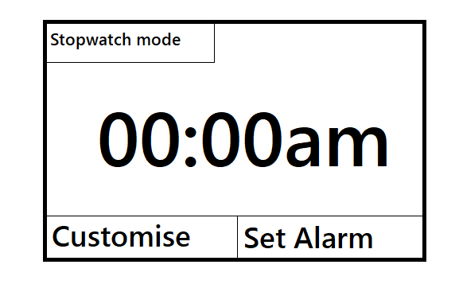
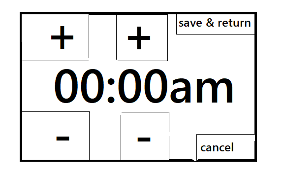
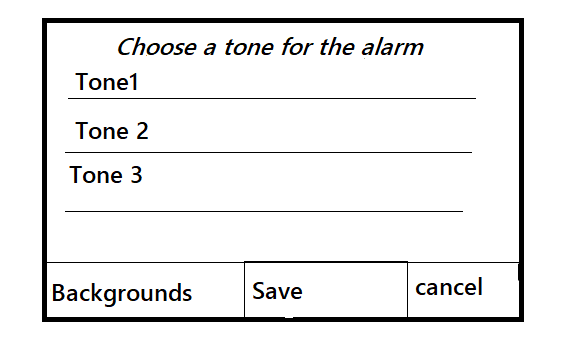
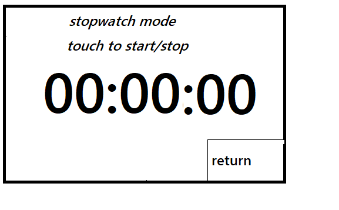

Here is a basic representation of our app. This is the main screen which displays the clock and has touch navigation buttons to go to the stop watch component, the customise component and the set alarm component of the app.

This next screen is the interface for setting the alarm clock. It has plus and minus buttons for both hours and minutes. It also has a cancel and a save and exit button.

This screen allows the user to choose a tone to play as the alarm. The user can toggle to a menu where they can select a background for the app too and a font and border design.

This image shows the stop watch portion of the app. The user can tap the screen anywhere but the cancel button to start the stop watch. It will count up until the user touches the screen again.
